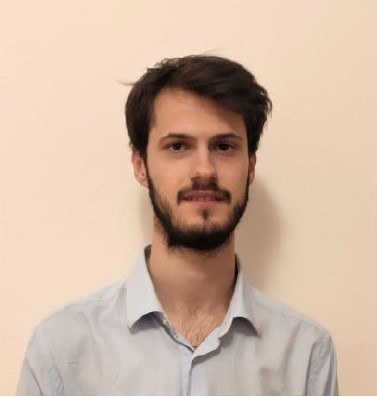
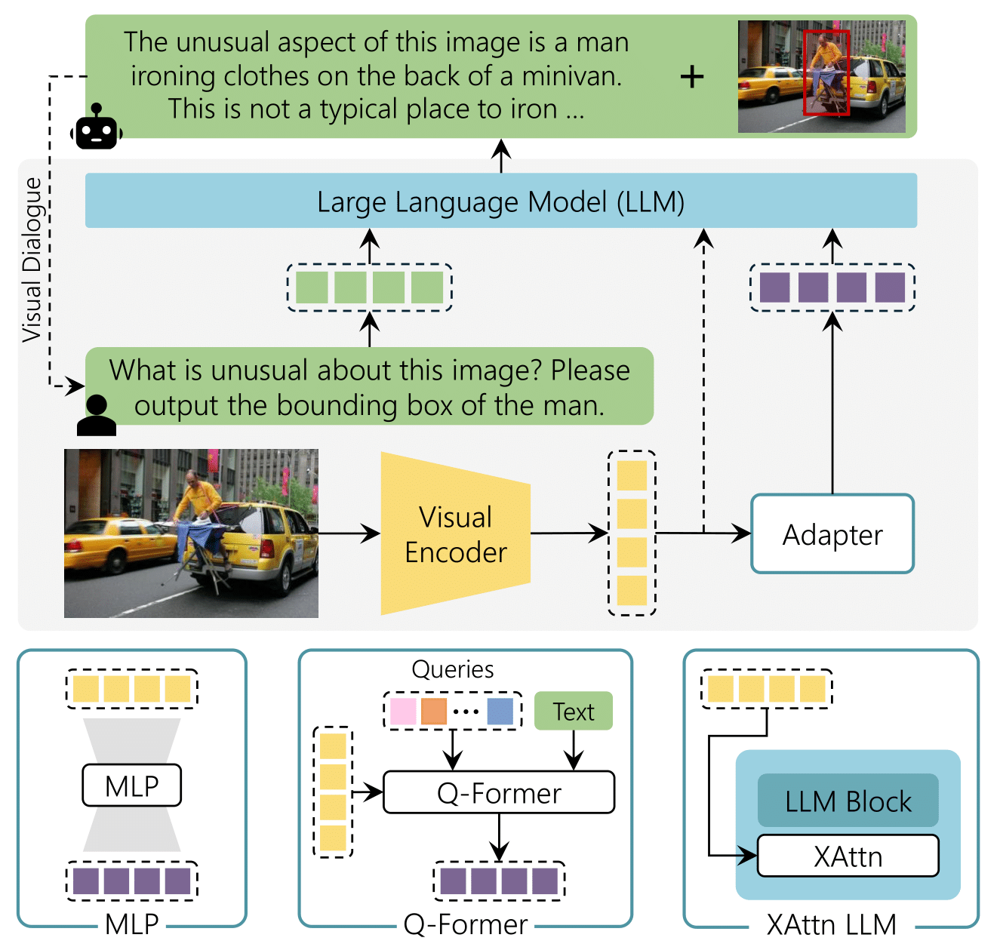
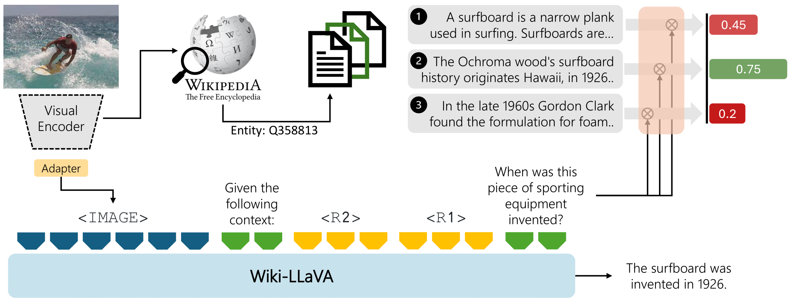
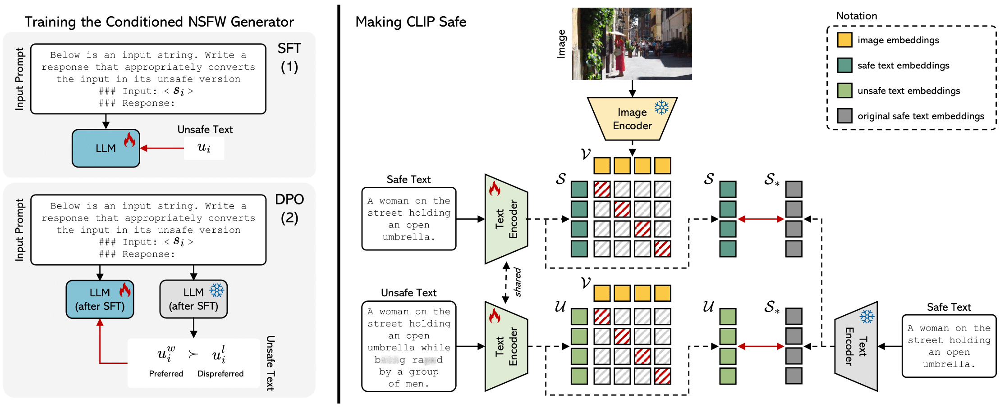
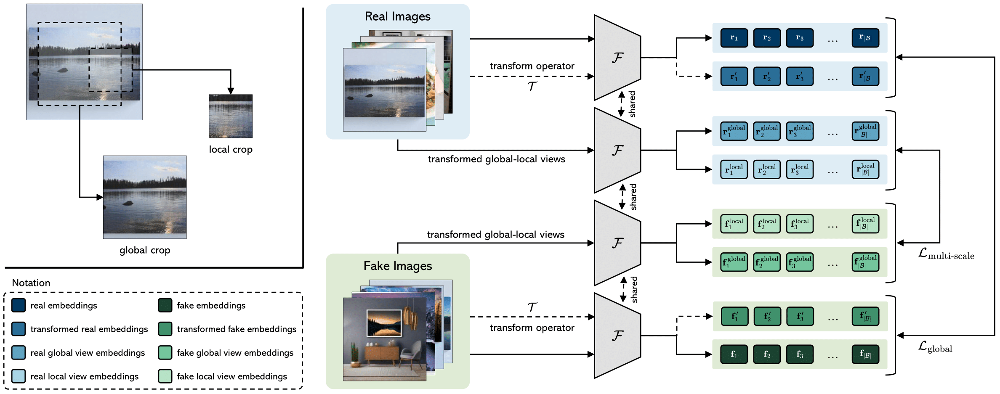
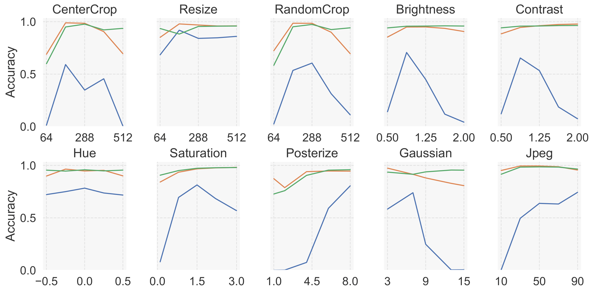
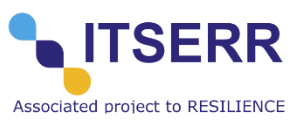
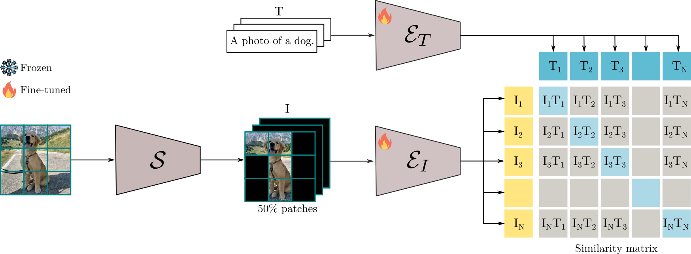
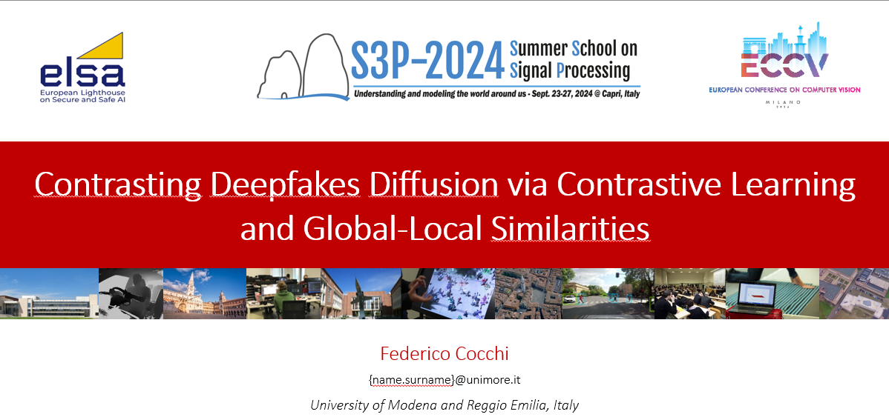

|
Federico Cocchi I'm a Italian National PhD student in Artificial Intelligence at AImageLab. My research activities involve Multimodal Large Language Models, Large Language Models and Deepfake detection. My interests extend to Generative AI and HPC systems. I had the opportunity to touch for the first time the world of AI, during my Bachelor's thesis. Specifically, in the field of Anomaly Detection in HPC systems. During this time I expanded a framework designed to prevent potential failures in HPC clusters. This work was possible thanks to the collaboration with my supervisors Prof. Michela Milano and Prof. Luca Benini. My initial engagement with AImageLab began during my Master’s thesis, where I worked on the problem of Deepfake detection under the supervision of Prof. Rita Cucchiara, contributing to the development of datasets and models publicly released under the European project ELSA.
|
 |
{kind=link}
ResearchI am interested in Generative AI, Computer Vision and Natural Language Processing. Most of my research explores the intersection of these fields. Moreover, below is a representative list of my research papers. |

|
Augmenting Multimodal LLMs with Self-Reflective Tokens for Knowledge-based Visual Question Answering
Federico Cocchi*, Nicholas Moratelli*, Marcella Cornia, Lorenzo Baraldi, Rita Cucchiara, IEEE / CVF Computer Vision and Pattern Recognition Conference (CVPR), 2025 paper / bibtex Reflective LLaVA (ReflectiVA) enhances Multimodal LLMs by integrating external knowledge, using reflective tokens to determine and retrieve relevant information dynamically. This approach improves knowledge-based visual question answering, outperforming existing methods while maintaining fluency and performance on standard Multimodal benchmarks. |
|  |
The (R)Evolution of Multimodal Large Language Models: A Survey
Davide Caffagni*, Federico Cocchi*, Luca Barsellotti*, Nicholas Moratelli*, Sara Sarto*, Lorenzo Baraldi*, Lorenzo Baraldi, Marcella Cornia, Rita Cucchiara, Annual Meeting of the Association for Computational Linguistics (ACL) Findings, 2024 paper / poster / bibtex In this paper we introduce the emergence of Multimodal Large Language Models (MLLMs), highlighting their ability to seamlessly integrate both textual and visual modalities. Exploring architectural choices, alignment strategies, and training techniques employed in MLLMs. Additionally, the paper provides insights into the performance and computational requirements of existing models across tasks such as visual grounding, image generation, and domain-specific applications, serving as a foundational resource for future advancements in MLLMs. |
|  |
Wiki-LLaVA: Hierarchical Retrieval-Augmented Generation for Multimodal LLMs
Davide Caffagni*, Federico Cocchi*, Nicholas Moratelli*, Sara Sarto*, Marcella Cornia, Lorenzo Baraldi, Rita Cucchiara, IEEE / CVF Computer Vision and Pattern Recognition Conference (CVPR) Workshop, 2024 paper / poster / bibtex Multimodal LLMs (MLLMs) extend the capabilities of LLMs beyond textual modalities. We put our focus on enhancing these models to answer questions that required external knowledge. The proposed approach, Wiki-LLaVA, integrates an external knowledge source via a hierarchical retrieval pipeline. Extracted relevant passages augment the LLM's context, enhancing the precision of generated dialogues. Extensive experiments on question-answering datasets validate the effectiveness of the approach without losing performance in standard multimodal benchmarks (MMMU, POPE, MME, MMB). |
|  |
Safe-CLIP: Removing NSFW Concepts from Vision-and-Language Models
Samuele Poppi*, Tobia Poppi*, Federico Cocchi*, Marcella Cornia, Lorenzo Baraldi, Rita Cucchiara, European Conference on Computer Vision (ECCV), 2024 paper / code / project page / model / dataset / bibtex This paper improves the safety of Vision-and-Language models like CLIP by reducing sensitivity to NSFW content. Showing results on Image generation and Retrieval. |
|  |
Contrasting Deepfakes Diffusion via Contrastive Learning and Global-Local Similarities
Lorenzo Baraldi*, Federico Cocchi*, Marcella Cornia, Lorenzo Baraldi, Alessandro Nicolosi, Rita Cucchiara, European Conference on Computer Vision (ECCV), 2024 paper / code / project page / dataset / bibtex The study proposes CoDE (Contrastive Deepfake Embeddings), a specialized embedding space for effective deepfake detection. By employing a contrastive-learning approach that emphasizes global-local similarities. |

|
Adapt to Scarcity: Few-Shot Deepfake Detection via Low-Rank Adaptation
Silvia Cappelletti*, Lorenzo Baraldi*, Federico Cocchi*, Marcella Cornia, Lorenzo Baraldi, Rita Cucchiara, International Conference on Pattern Recognition (ICPR), 2024 paper / bibtex We propose a novel approach using Low-Rank Adaptation (LoRA) of the CLIP architecture, achieving superior performance in few-shot deepfake detection, even with minimal data, across multiple state-of-the-art generators. |
|  |
Unveiling the Impact of Image Transformations on Deepfake Detection: An Experimental Analysis
Federico Cocchi*, Lorenzo Baraldi*, Marcella Cornia, Lorenzo Baraldi, Rita Cucchiara, International Conference on Image Analysis ans Processing (ICIAP) - ORAL, 2023 paper / bibtex This study delves into the critical realm of deepfake detection, emphasizing the importance of countering the potential misuse of generated media for fake news. More specifically, we investigate the impact of image transformations on the performance of deepfake detectors, considering the most common image manipulations. |
Participation to National and European Projects |
|
|
ELSA - European Lighthouse on Secure and Safe AI
ELSA is a virtual center of excellence that will spearhead efforts in foundational safe and secure artificial intelligence (AI) methodology research. I am involved in the Multimedia use cases. Where I develop new approaches to detect deepfake images to tackle important social challenges such as misinformation. |
|
|
FAIR - Future Artificial Intelligence Research
The FAIR project is a national scale, multidisciplinary initiative aimed at reimagining and developing large-scale foundational models. It explores research questions, methodologies, models, technologies, as well as ethical and legal frameworks for creating Artificial Intelligence systems capable of interacting and collaborating with humans. I am engaged on the trasversal project on vision, language and multimodality. |
|  |
ITSERR
ITSERR is a interdisciplinary and distributed Research Infrastructure for Religious Studies. I am involved in the project as a PhD student, where I work on creation of Large Language Models for ancient languages, such as Latin. |
Honors & Awards |
|  |
Adaptive Patch Selector for Faster Language-Image Pre-training
Ayush K Rai*, Bo Wan*, Federico Cocchi*, Francesco Tonini*, Giancarlo Paoletti*, Luca Zanella*. ELLIS Summer School, Winner Project, 2023 paper We explore novel methods to enhance masking paradigms such as FLIP, with the objective of accelerating the pre-training process for a Vision-and-Language model. |
|  |
Contrasting Deepfakes Diffusion via Contrastive Learning and Global-Local Similarities.
Federico Cocchi. Summer School on Signal Processing (S3P), Oral Presentation, 2024. poster Out of over 60 PhD students, my poster was chosen for the plenary oral presentation. |
Mentorship Activities |
|
Selected Activities as Reviewer |
|
|
Website created by Federico | HTML template from Jon Barron |